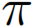
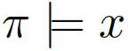
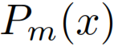
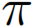
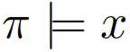
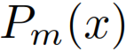

be a knowledge base. For a literal
be a knowledge base. For a literal  a minimal proof in is a set
a minimal proof in is a set  such that 1. is mentioned in , 2. , and 3. is minimal wrt. set inclusion (note that has not to be consistent). Let  be the set of all minimal proofs of in . Then the Pm inconsistency measure
such that 1. is mentioned in , 2. , and 3. is minimal wrt. set inclusion (note that has not to be consistent). Let  be the set of all minimal proofs of in . Then the Pm inconsistency measure  is defined as
is defined as